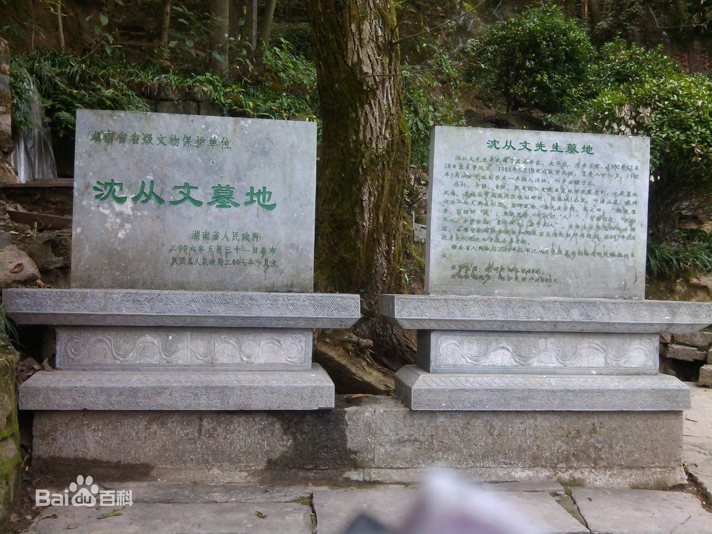

凤凰-沈从文墓地
凤凰景点介绍
沈从文墓地位于沱江畔的听涛山，其前身是清代曾任钦差大臣、云贵提督的凤凰籍苗族人田兴恕为孝敬其母杜氏修建的花园，也是文人墨客在凤凰休闲观光的场所。又名“杜母园”。
人物介绍
沈 从文先生是中国著名文学家、史学家、考古学家， 凤凰县人，生于1902年12月28日，1988年5月10日病故于北京，终年86岁。
先生一生中，著有五百万字的著作文章，《 边城》、《 长河》、《从文自转》是其代表著。他晚年专著《 中国古代服饰研究》一书，填补了中国物质文化史上的一页空白。先生从凤凰走向世界文坛，为家乡为民族争得了荣誉。
家乡人民非常崇敬他，县委、县政府与其家属商议，决定将先生骨灰安葬在“听涛”山下。沈家主动自理安葬费。
墓地历史
沈从文墓地所在地前身是清代曾任 钦差大臣、云贵提督的凤凰籍苗族人田兴恕为孝敬其母杜氏修建的花园，也是文人墨客在凤凰休闲观光的场所。又名“杜母园”。墓穴后有一不规则的天然五色巨石肃然矗立，是沈从文墓独特的标志。巨石高1.9米，重6吨多，前面刻有沈从文富有哲学内涵的语句：照我思索，能理解我；照我思索，可认识人 。背面刻有沈从文侄女婿、中央美术学院著名雕塑家刘焕章教授镌刻的挽联。1911年11月，民国大总统 黎元洪得知凤凰辛亥革命成功的消息后，曾在这里的山崖石壁上镌刻”兴废周知“四个大字。